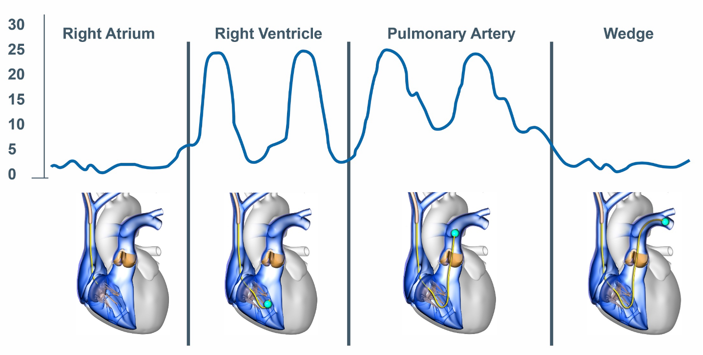
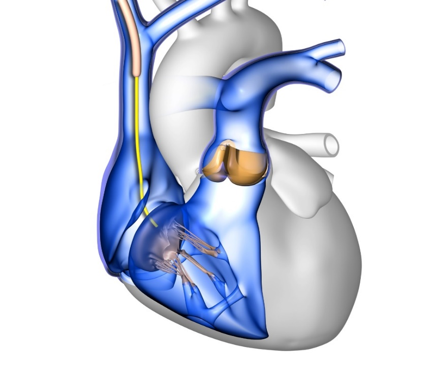
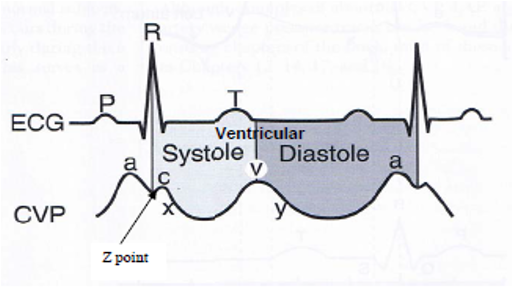
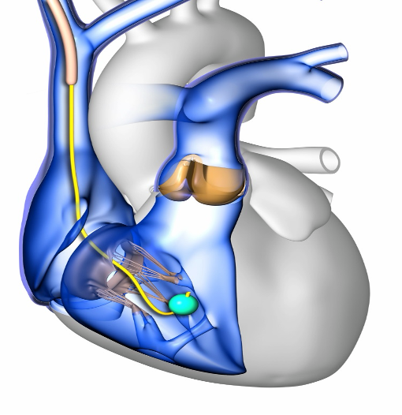
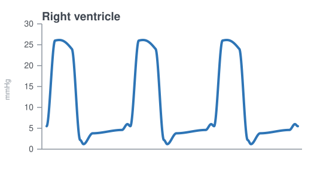
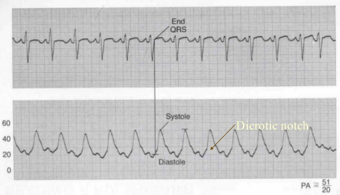
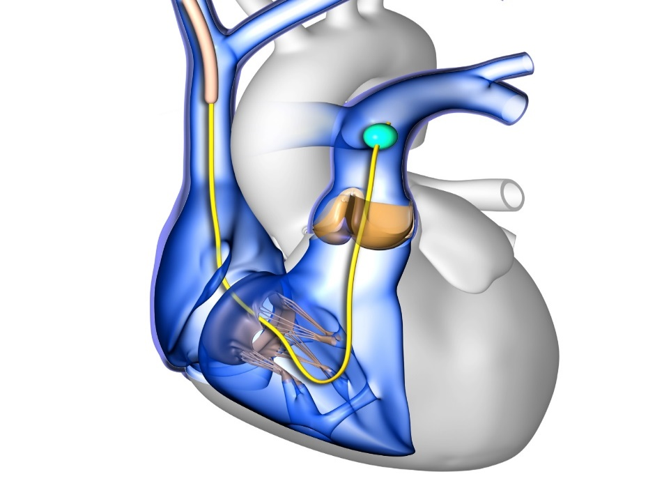
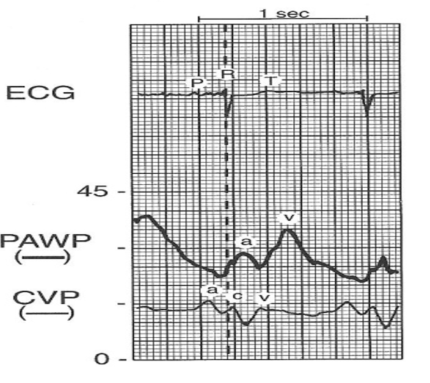
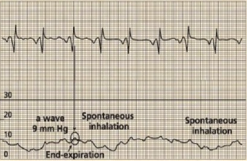

Module N7 · Topic 2 of 4
PA catheter insertion and troubleshooting
Insertion
Before inserting the PA catheter, it is important to flush all ports, test the balloon integrity and apply the protective sleeve over the catheter. Before inserting the catheter, ensure that the catheter transducer is zeroed and leveled appropriately. An introducer sheath is then inserted into a central vein in the neck (internal jugular), arm (brachial or subclavian), or groin (femoral). Once the introducer sheath is in place, the PA catheter should be inserted through the introducer sheath with the angle of the J-shaped catheter tip oriented toward nine o'clock. Advance with the balloon deflated until the catheter is in the cavoatrial junction. For internal jugular vein insertions, this corresponds to about 20 cm. At this point it is safe to inflate the balloon with 1.5 mL of air. Inflating the balloon will facilitate the tip of the catheter migrating forward through the right atrium and ventricle, into the pulmonary artery, aided by blood flow pushing the balloon in the correct trajectory. In many cases, insertion is guided by fluoroscopy. When placing a catheter at the bedside or in a scenario where fluoroscopy is otherwise unavailable, catheter insertion is usually guided by a combination of pairing the appropriate waveform at the tip with the proper corresponding length of catheter inserted into the body. The whole procedure is a matter of reading the tracing as you advance and knowing what each hurdle looks like.

Advance by the waveform
As a rough map from the right internal jugular vein, the catheter enters the right atrium at near 20 cm, the right ventricle near 30 cm, the pulmonary artery near 40 cm, and the pulmonary artery wedge around 45 to 60 cm. The right ventricle is irritable: a burst of ventricular ectopy usually means the tip is sitting in the RV, so minimize your time there and, if it persists, withdraw slightly into the right atrium rather than pushing on.
Right atrial waveforms
As soon as a RA pressure waveform is observed, the balloon should be inflated with 1.5 ml of air. At this point it is appropriate to measure the RA pressure. This measurement is typically performed at end-expiration on a calibrated monitor screen or paper recording to minimize the effect of pleural pressure on the measurement. There are five phasic events associated with the right atrial waveform, three positive waves (a, c and v) and two negative deflections (x and y descent).


- The a wave represents atrial contraction which occurs at end diastole. This follows the p wave on the electrocardiogram.
- The c wave is the result of a tricuspid bulge into the right atrium during isovolumic contraction of the right ventricle. This feature coincides with the QRS complex on the electrocardiogram.
- The x descent represents downward movement of the lateral annulus of the tricuspid valve during RV contraction and atrial relaxation. This coincides with the ST segment on the electrocardiogram.
- The v wave is the result of rapid atrial filling when the tricuspid valve is closed during ventricular systole. This follows the T wave of the electrocardiogram.
- The y descent represents rapid ventricular filling as the tricuspid valve opens in early diastole. This coincides with the TP segment of the electrocardiogram.
 At the bedside. Understanding the phases of a right atrial pressure tracing can provide significant information beyond a simple right atrial pressure.
At the bedside. Understanding the phases of a right atrial pressure tracing can provide significant information beyond a simple right atrial pressure.
A large v wave, and tricuspid regurgitation. The v wave is the pressure built up in the atrium as it fills against a closed tricuspid valve, so it sits after the T wave, late in systole. When the valve is incompetent, part of the right ventricular stroke volume is driven backward into the atrium during systole, and the atrium now fills from two sources at once. The v wave enlarges, and as the regurgitation becomes severe the systolic portion of the tracing loses its x descent and the c and v waves merge into one broad wave, so the atrial tracing starts to look ventricularized. Two things follow at the bedside. The mean right atrial pressure is now set in large part by the regurgitant volume rather than by how full the venous reservoir is, so reading that number as a filling pressure will overstate the patient's volume state. And a tracing that changes shape in this way is often the earliest sign of new or worsening tricuspid regurgitation, which should send you looking for RV dilation, a rise in pulmonary artery pressure, endocarditis, or a pacing lead held across the valve.
A steep y descent, and RV diastolic dysfunction. The y descent is the fall in atrial pressure that begins when the tricuspid valve opens and the atrium empties into the ventricle, so it follows the v wave and sits over the TP segment. Its steepness is a statement about the ventricle, not about the atrium. When the right ventricle is stiff, or when its filling is constrained from outside, atrial pressure is high at the moment the valve opens while ventricular pressure is still low, the early diastolic gradient is therefore large, and the atrium empties abruptly. Filling then stops just as abruptly once the ventricle reaches the limit of what it will accept, which is why a steep y descent is followed by an early diastolic plateau in constrictive and restrictive physiology. Clinically this is a warning against volume. A steep y descent says the limit is the ventricle's ability to accommodate blood, not a shortage of blood, so further filling raises right atrial pressure and venous congestion of the kidney and gut without buying stroke volume. It is also the feature that separates constrictive and restrictive physiology from tamponade, where the y descent is blunted or absent because the constraint acts throughout diastole and prevents rapid early filling in the first place.
Right ventricular waveforms
Once the tricuspid valve is traversed, you should note a pulsatile waveform. This is the right ventricular contraction. The systolic pressure here should be between 15 and 30 mmHg. The diastolic should be same as right atrial pressure, about 1 to 6 mmHg given that the right ventricle fills from the right atrium. Continue to advance the catheter through the RV as ventricular arrhythmias may occur here.


Pulmonary artery waveforms
At approximately 40 cm, you should see the diastolic pressure increase. This represents the fact that the PA catheter has traversed the pulmonic valve and is now in the pulmonary artery. The resulting waveform is the PA waveform. A few characteristic features distinguish the PA waveform from the RV waveform. The first is the increased diastolic pressure. The PA systolic pressure should be similar to that of the RV, but the diastolic pressure should rise to about 6 to 12 mmHg due to closure of the pulmonic valve followed by flow resistance in the pulmonary arterial network. The second distinguishing feature is the characteristic dicrotic notch seen on the PA waveform, representing the closure of the pulmonic valve.


To measure the PA pressure, locate peak systole within the T wave. This represents the systolic pressure. Then locate end diastole at end of QRS as shown in the waveform above. This represents the diastolic pressure. Mean pulmonary artery pressure is usually calculated by the monitor through digital integration of the entire pulmonary artery pressure waveform over one or more cardiac cycles. A commonly used manual approximation is:
This formula weights diastolic pressure twice because diastole usually occupies more of the cardiac cycle than systole. It is generally reasonable at normal heart rates, but becomes less accurate with marked tachycardia, bradycardia, arrhythmias, or distorted waveforms.
Wedging the catheter tip
Inflation of the balloon tip serves two purposes. First, the balloon assists with guiding the catheter tip through the curvature of the right ventricle and into the pulmonary artery. Once the catheter is in the pulmonary artery, the balloon will become wedged as the diameter of the pulmonary arteries decreases, such that flow around the catheter ceases. In this setting, a static column of blood exists between the distal tip of the catheter and the left atrium, allowing the left atrial pressure waveform to reflect backwards toward the catheter. This pressure is called the wedge pressure or PA occlusion pressure (PAOP). Once you have wedged your catheter and recorded the PAOP, do not forget to deflate the balloon and ensure that a PA waveform returns. After confirming the return of the PA waveform and the balloon in the deflated position, fix the catheter's position. If a wedged waveform persists despite deflating the balloon, the catheter is inserted too far. Pull the catheter back a few centimeters. It is essential not to leave the catheter wedged. This can lead to serious problems such as lung infarct, pulmonary artery thrombus, or PA rupture.
Wedging and waveform propagation. To better understand why the concept of wedging works, it is important to review how the mechanical energy from the vasculature pressure wave traverses from the pulmonary vessels to the ICU monitor. To begin, let us consider how a waveform propagates from the vasculature to the ICU monitor. This concept is not limited to the PA catheter. It applies to all intravascular catheters that monitor pressure (central venous catheter, arterial catheter and so on). A good way to visualize the concept of waveform propagation through a catheter is to imagine a long row of people standing shoulder to shoulder. The first person in the row is pushed. That person moves only slightly but immediately pushes the next person, who pushes the next person. The original person does not travel anywhere, but the force disturbance propagates along the row.
In the PA catheter, when a mechanical force arrives at the tip of the catheter:
- The mechanical energy (pressure) in the pulmonary artery pushes on the saline at the opening of the catheter, similar to the first person in the row being pushed as described above.
- The saline molecules in the catheter transmit the pressure disturbance through the fluid column up to the transducer assembly.
- Within the transducer assembly, the pressure disturbance pushes against a flexible diaphragm in the transducer. The degree of membrane distention is proportional to the pressure transmitted through the catheter.
- The diaphragm is seated against a piezoresistive sensing element. When the diaphragm distends, it bends the piezoresistive element.
- The piezoresistive sensing element carries a constant flow of electricity through it. When it is bent, the resistance through the element changes. The result is a variable voltage output from the transducer to the ICU monitor unit.
- The monitor interprets the changing voltage, amplifies the signal and plots it over time on the screen as a pressure signal.
Thus, the system performs two principal transformations:
- At the transducer, mechanical energy becomes an electrical signal. Pressure carried up the fluid column displaces the diaphragm, and the piezoresistive element converts that displacement into a changing voltage.
- At the monitor, the electrical signal becomes a displayed pressure. The voltage is amplified and plotted against time as the waveform you read.
When the balloon is inflated as one might do to assess a wedge pressure, the balloon occludes a small pulmonary artery branch and eliminates forward blood flow beyond the catheter tip. This creates a continuous, static column of blood extending from the catheter tip through the distal pulmonary arteries, pulmonary capillaries, and pulmonary veins to the left atrium.

Left atrial pressure waves can then travel backward through this motionless blood column to the catheter tip, into the saline filled catheter, and onward to the transducer by the same mechanical and electrical pathway as described above. This works because the static column of blood beyond the distal tip of the catheter acts very much like the static fluid column within the catheter. The process acts as if we were simply extending the length of the catheter all the way through the pulmonary circulation to the left atrium. The result is that the pulmonary artery occlusion pressure approximates left atrial pressure when the catheter is correctly positioned, the balloon occludes forward flow through the pulmonary circulation, and the pulmonary vascular pathway is unobstructed.
The PAOP is usually reported as the pressure of the a-wave measured during end exhalation. At first glance, the wedge waveform looks very similar to the right atrial waveform. In fact, the inventors of the PA catheter described early confusion over the wedge waveform, initially interpreting it as a signal that the catheter had somehow traversed into the coronary sinus (Forrester's account in JACC, opens in a new tab). If we look at the graphic below, notice that the a wave is shifted rightward on the EKG as compared to a right atrial waveform. This is because the left atrium is further away from the PA catheter, so it takes longer for the pressure wave to travel back through the pulmonary veins, across the pulmonary capillaries, and through the length of the PA catheter to the transducer assembly. In addition, a wedge waveform generally has 2 peaks (a and v) instead of the 3 peaks characteristically found in the right atrial waveform (a, c and v).

In non PAH patients, the PA diastolic pressure should roughly estimate the PAOP. It is always wise to test this by comparing a proper PAOP with the PA diastolic pressure. Once confirmed, you can use the PA diastolic pressure as a surrogate for the PAOP. The PAOP should never be higher than the PA diastolic pressure. If this occurs, consider that the catheter may be overwedged (see below).
In general the PAOP serves as a fairly accurate measure of left ventricular end diastolic pressure (LVEDP). However, in some cases, the PAOP can over- or underestimate the LVEDP.
| Direction of error | Mechanism | Common causes |
|---|---|---|
| PAOP underestimates the LVEDP | Reduced LV compliance or contractility, so the pressure generated at end diastole is not fully transmitted back to the tip | Acute myocardial infarction, aortic insufficiency, cardiac tamponade, constrictive pericarditis, left ventricular failure, mitral regurgitation, hypervolemia |
| A very high LVEDP is not adequately reflected back through the pulmonary circulation | LVEDP above 25 mmHg | |
| PAOP overestimates the LVEDP | Diastole too short for atrial and ventricular pressures to equilibrate | Heart rate above 125 |
| Obstruction between the pulmonary artery and the left ventricle | Mitral stenosis, left atrial myxoma, pulmonary venous obstruction | |
| Alveolar pressure exceeds pulmonary venous pressure, so the tip reads airway pressure (West zone 1 or 2) | Catheter tip in zone 1 or 2, positive pressure ventilation or CPAP, relative hypovolemia | |
| Pulmonary disease raising the gradient across the lung | ARDS, COPD, pulmonary embolism, hypoxemia |
Read every pressure at end-expiration
Measure at end-expiration, when intrathoracic pressure is closest to zero. In a spontaneously breathing patient, inspiration pulls the tracing down, so read just before that dip. On positive-pressure ventilation the tracing rises with the breath, so read just before it climbs.

Troubleshooting
When the catheter will not cross into the RV
At times, insertion of the PA catheter is plagued by repeated coiling of the catheter in the right atrium. This is frequently caused by a combination of right atrial enlargement distorting the normal right atrial architecture and severe tricuspid regurgitation resisting forward movement of the catheter. Inserting the catheter with a slight counter clockwise tension on the catheter can help spring the catheter through the tricuspid valve. Fibrous strands (a Chiari network) can also snag the balloon. If the tracing looks arterialized but the oxygen saturation is surprisingly low, the tip has strayed into the coronary sinus. In these cases, if slight catheter rotation and repeated tries are unsuccessful, it is prudent to move the patient to a procedure suite capable of performing fluoroscopy assisted PA catheter insertion, where guidewires and patient positioning in concert with direct visualization of the catheter insertion process often make insertion less challenging.
When the catheter will not float into the PA
If it reaches the RV but will not advance onward, it is usually coiling in a dilated RV or held back by elevated pulmonary artery pressures or pulmonic regurgitation. In these cases withdraw the catheter to the right atrium and try again. Sometimes, sitting the patient up or placing them in a slight right decubitus position so the left side is up will allow the inflated balloon to ride toward the pulmonic valve, this coupled with timing the catheter insertion with inspiration in a spontaneously breathing patient or expiration in a mechanically ventilated, passive patient. If it still will not pass, fluoroscopic guidance should be pursued.
Over-wedging and self-wedging
Over-wedging happens when the balloon traps the tip against the vessel wall. The slow continuous flush behind it builds back-pressure, seen as a pressure that keeps climbing above the PA diastolic and loses its pulsatility. When this occurs, deflate the balloon, pull back on the catheter slightly, then reinflate slowly to the minimum volume that produces a wedge waveform. Record the position of the catheter and volume of air in the balloon used to produce a wedged waveform. A catheter can also self-wedge by migrating distally. For this reason, it is important to never flush a wedged catheter.

Balloon rupture
If the balloon does not passively refill the syringe (or blood returns), suspect a ruptured balloon. When this occurs, the catheter should be carefully removed from the patient and, if necessary, a new PA catheter inserted.
References
- PAC Modules deck (Patrick Lindsay) · PA Catheter Topic 2 question bank · sim-day mastery checklist. Supporting decks: Arunachalam PAC, PAC-based cardiac output.